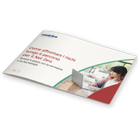

Le imprese che non si aggiornano sulle innovazioni tecnologiche e sulle
linee guida richieste dall'UE rischiano di non essere
conformi e
di esporsi a costi delle emissioni più elevati.
|
Scarica il report per
scoprire:
|
| • |
Come
la rendicontazione delle emissioni conduce più velocemente al Net Zero
|
| •
|
Quali
sono le soluzioni tecnologiche più
diffuse per ridurre le emissioni |
| •
|
Qual
è il ruolo dell'idrogeno negli
investimenti tecnologici futuri |
|
|  |
Leggi il report per
scoprire come tenere il passo con le normative e la tecnologia
|
|
| |
|